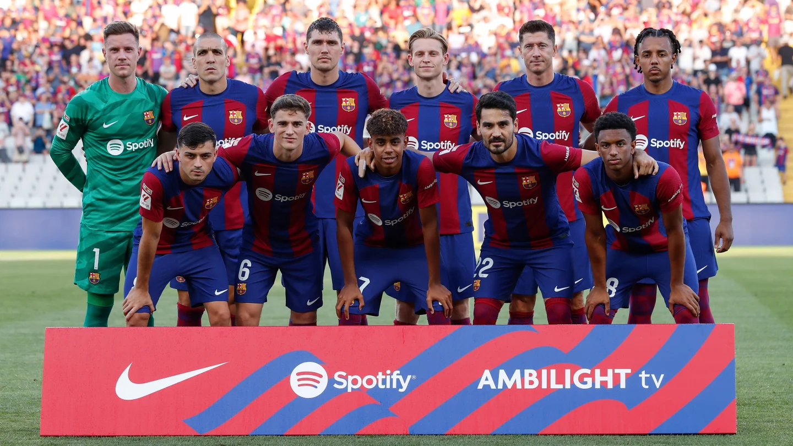

FC Barcelona
Kom meer te weten over...
FC Barcelona
FC Barcelona, opgericht in 1899, is niet zomaar een voetbalclub; het is een instituut dat diep geworteld is in de geschiedenis en cultuur van Catalonië. Met het iconische Camp Nou-stadion als thuisbasis heeft deze club wereldwijd een ongeëvenaarde reputatie opgebouwd, niet alleen vanwege zijn voetbalprestaties, maar ook vanwege de sterke identiteit en waarden die het vertegenwoordigt.
lees meerGeschiedenis
Het succesverhaal van FC Barcelona is doordrenkt met triomfen op zowel nationaal als internationaal niveau. Met talloze La Liga-titels en UEFA Champions League-overwinningen heeft Barcelona een indrukwekkende erelijst opgebouwd. De club staat bekend om zijn kenmerkende speelstijl, beïnvloed door het concept van 'tiki-taka' - snel, kort passenspel dat tegenstanders overweldigt en fans over de hele wereld betovert.
De Club
Het verhaal van FC Barcelona is er een van triomfen, iconische spelers, en een ongeëvenaarde clubcultuur. Het blijft een bron van inspiratie voor voetballiefhebbers en staat symbool voor de kracht van sport om mensen te verenigen en gemeenschappen te beïnvloeden. En op de verjaardag van deze geweldige club vieren we niet alleen het succes op het veld, maar ook de passie en trots die het in het hart van miljoenen fans wereldwijd heeft geplant. ¡Visca el Barça!
lees meer